Reserve {1}{R}{G} before you attack. Balthier and Fran's extra-combat payment happens when their attack trigger resolves, before combat damage. They do not untap anything or give you a main phase between combats. Your Vehicles normally stay ready for the next attack because the commander gives them vigilance.
This Bracket 3 list emphasizes early development, haste, a small number of threatening attackers, and short combat turns. Its fourteen Vehicles supply pressure and resources. The tuned version trades some expensive value and cheat effects for one-mana ramp, attack-triggered mana, double strike, and combat boosts. Ancient Tomb, Jeska's Will, and The One Ring are the three Game Changers. There is no planned infinite combo, mass land denial, or extra-turn chain. The usual plan is one additional combat, with more available when an established board makes them decisive.
The turn you want to repeat
Declare your intended attacks, pay for the additional combat if it advances the game, resolve the attack and damage effects, then attack again with the available creatures. A Vehicle already animated by another effect may still be crewed by the commander to meet the extra-combat condition. Returning the commander after it was removed creates a new object; crew with the new commander if you want its ability to recognize that crew action.
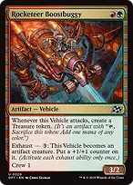
Rocketeer Boostbuggy

A cheap Vehicle that makes a Treasure on every attack. Put the commander's extra-combat trigger on the stack first and Boostbuggy's Treasure trigger above it, so the Treasure exists when the payment is due. One Treasure pays only one of the three required mana. Its exhaust ability can permanently animate it, but the commander still needs to crew it that turn for the additional-combat trigger.

Smuggler's Copter
A two-mana flying attacker that loots on each attack or block. Two attacks offer two opportunities to replace unwanted cards. Discard expensive artifacts when Goblin Welder can recover them, or spare lands when your mana is already developed.
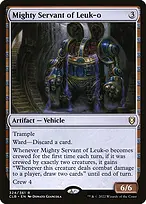
Mighty Servant of Leuk-o
Crew it for the first time that turn with exactly two creatures to earn its combat-damage draw ability. Use Balthier and Fran plus a spare mana creature: exceeding the minimum crew power is legal. It can then draw two cards on each successful combat-damage event that turn. Crewing with only the commander first and adding another crew activation later does not earn the ability.
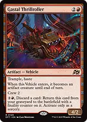
Gastal ThrillrollerArrives animated with haste, making it a straightforward early attacker. Crew it with Balthier and Fran anyway when you want the extra-combat trigger. Its graveyard activation provides recovery at the cost of mana and a discarded card; the finality counter means it is exiled if it would subsequently die.
Make two attacks produce more than damage

The Regalia
Haste and crew one make it useful with or without the commander. Every attack finds the next land and puts it onto the battlefield tapped, so two attacks build future mana quickly. That tapped land normally cannot fund the current additional-combat payment.
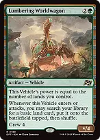
Lumbering WorldwagonThree mana buys a Vehicle and a guaranteed basic land entering tapped, with another basic available on each attack. This ramps earlier and more reliably than milling for lands, and the Vehicle's power scales with your land count. There are only six basics in the deck, shared with Prismatic Vista and any fetches that find them, so count remaining targets. The tapped lands cannot pay the current attack-trigger cost. Resolve the searches efficiently; this is a power upgrade that does add shuffling to combat turns.
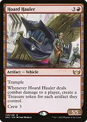
Hoard HaulerTrample helps it connect, then the damaged player's artifact count determines your Treasures. Those Treasures arrive after the commander's attack-trigger payment, so they cannot retroactively pay for that extra combat. Use them for later instant-speed plays, your postcombat main phase, or subsequent turns.
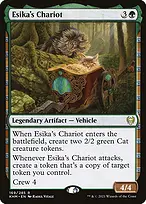
Esika's ChariotProvides its own two Cats for crew and makes another token when it attacks. Copy a Cat for pressure or a Treasure for mana when that is more useful. The token is not created attacking and has no granted haste. The Cats lack the commander's Vehicle vigilance, so attacking with them normally taps them for the later combat too.

Skysovereign, Consul Flagship
Deals three to an opposing creature or planeswalker on entry and on each attack. Across two combats it can remove several small blockers or utility creatures while applying flying damage. Its triggered damage cannot target players.
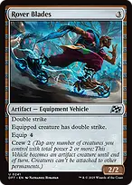
Rover BladesA three-mana Vehicle with built-in double strike replaces a much more expensive threat. Under the commander it is a 3/3, dealing six on an unblocked attack and twelve over two combats before any other boosts. Xenagos and Berserk scale both damage steps. Normally crew it instead of paying four to equip; becoming a creature makes it detach if it was attached.

Reaver Titan
Its attack trigger deals five to every opponent each combat, while its large body attacks one defender. Two attacks therefore deal ten to each opponent before any combat damage. It has protection from mana value three or less, which also prevents your own Temur Battle Rage, Berserk, Tyvar's Stand, Hunter's Insight, Shadowspear, and Kessig Wolf Run from targeting or attaching to it. Crew does not target, so Balthier and Fran can crew it legally.
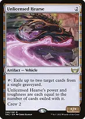
Unlicensed HearseProvides cheap graveyard interaction and grows as it exiles cards. If you tap it to exile cards before combat, it is not available to attack unless something untaps it. Without cards exiled, it is naturally 0/0 as a creature; the commander's bonus can keep it alive, but losing that bonus may kill it.
Develop mana early and keep the payment available

Birds of ParadiseSupplies either commander color on the next turn or helps crew a Vehicle when mana is less important. It has zero power naturally, so it can be the second creature for Mighty Servant only when the other creature already supplies enough crew power.

Llanowar ElvesOne-mana acceleration that enables a turn-two commander after two land drops. Elvish Mystic provides redundancy. Decide whether each mana creature is producing mana or crewing this turn; a tapped creature cannot do both without being untapped.

Delighted HalflingIts colored mana casts legendary spells uncounterably, including the commander, The Regalia, or The One Ring. Use its colorless mode for ordinary Vehicles. Its colored mana cannot pay the commander's extra-combat ability because that is not casting a legendary spell.
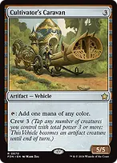
Cultivator's CaravanRamps early and becomes an attacker later. Tapping it for mana leaves it tapped, even if it subsequently gains vigilance; vigilance prevents tapping to attack and does not untap an already tapped creature. Do not count the same Caravan as both a mana source and an attacker for the additional combat.

Ancient TombThe acceleration Game Changer is particularly effective for colorless Vehicles and the generic portion of spells. It does not supply red or green for the commander or its trigger. Its life cost accumulates, so use Shadowspear's lifelink when the game runs longer.

Sol Ring
Accelerates your artifacts and generic costs without supplying either commander color. Pair it with actual green access for early development and preserve a red source for the combat payment. It does not compensate for an opening hand whose lands cannot cast your colored spells.

Wild GrowthOne-mana acceleration on any land lets you develop the commander sooner while preserving later mana for attacks. It adds green regardless of the enchanted land's original production. When possible, enchant a land you are unlikely to sacrifice; losing that land also loses the Aura.

Utopia SprawlThe second one-mana land accelerator needs a Forest, including Taiga or Stomping Ground. Choose the color your opening hand needs, often red when your other sources already provide green. Fetch an actual Forest land type first; a land producing green is not automatically a Forest. Yavimaya can make other lands legal hosts, but losing Yavimaya can make those Auras fall off.
Add haste and get value without the commander
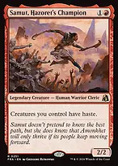
Samut, Hazoret's ChampionGives your creatures haste continuously, so a Vehicle gains the benefit as soon as it becomes a creature. At two mana, it lets newly cast Vehicles attack without a large setup investment. Samut also lets your tap-ability creatures operate immediately.
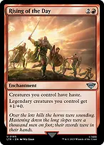
Rising of the DayContinuous haste works on Vehicles that entered as noncreature artifacts and were crewed afterward. Its extra power for legendary creatures also strengthens the commander, The Regalia, and other legends. This is the same mana investment as the previous haste enchantment with an added offensive benefit.
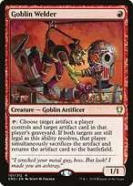
Goblin WelderExchanges a controlled artifact and an artifact card in the same player's graveyard. A Treasure or spare rock can become a lost Vehicle, provided both targets remain legal. The recovered Vehicle has no automatic haste. Do not sacrifice the targeted Treasure for mana before Welder resolves, because that would invalidate one of its targets.
Keep the hand stocked with simple draw engines

The One RingRefills your hand and buys a turn of protection when cast. Returning it through Welder does not grant the cast-dependent protection, but returns a fresh Ring without the old burden counters. Bello can animate the Ring during your turn, so decide whether its tap is being used for cards or an attack.
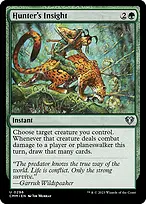
Hunter's InsightCast on a creature likely to connect to turn its combat damage that turn into cards, including damage in the additional combat. It targets, so Reaver Titan's protection prevents you from targeting it with this three-mana spell. A large trampling Vehicle such as Hoard Hauler is a suitable alternative.
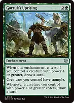
Garruk's UprisingGives your creatures trample and can draw on entry if the commander or another qualifying creature is present. Vehicles entering as noncreature artifacts do not trigger its later draw ability merely by being crewed afterward. Bello can make qualifying Vehicles enter as creatures during your turn, allowing that draw trigger.

Faithless LootingFilters awkward opening hands and puts artifacts into the graveyard for recovery. It is not net card advantage. Reckless Impulse supplies two playable cards through the end of your next turn when you need additional resources; leave mana and a land play available when possible.
Close with a few large attacks

ShadowspearAdds trample and lifelink to a crewed Vehicle, helping damage get through while recovering life. Equip during your main phase after crewing. When the Vehicle stops being a creature, the Equipment becomes unattached; it must be equipped again later. Its activated ability removes opposing hexproof and indestructible so your removal can work.

Sting, the Glinting DaggerEquip the commander, crew one Vehicle in your main phase, then let Sting untap the commander at the beginning of combat and crew a second Vehicle before declaring attackers. If both attack in that first combat, each produces a separate payment opportunity. Six mana buys two additional combats. The ability cannot generate fresh commander combat triggers in later combat phases, so this line is finite.
A finishing example: with the commander and no other boosts, Rover Blades is 3/3. Target it with Xenagos before the first attack to make it 6/6, then cast Berserk before combat damage to make it 12/6 with trample. Double strike deals up to 24 combat damage. In the additional combat, Xenagos targets it again to make it 24/18, allowing up to 48 more combat damage. These are maximum combat-damage totals before blockers and prevention, require paying for the extra combat, and are not a guaranteed table kill. Without Berserk, the same two attacks deal up to 12 and 24 damage.
For a wider board, target Ouroboroid with Xenagos instead. Put the Ouroboroid trigger on the stack first and Xenagos's above it so the power boost resolves before the counter count is determined. The larger counter grant improves every crewed Vehicle, persists into later turns, and becomes larger again in the extra combat. For Reaver Titan, use Xenagos directly and Garruk's Uprising for trample; the cheap targeted tricks cannot affect its protected body.
Protect the attack and clear the obstacle
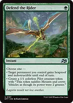
Defend the RiderOne-mana protection for a key permanent, including an uncrewed Vehicle. The Pilot mode is useful when a blocker or extra crew body matters more than protection, but one Pilot cannot independently reproduce Balthier and Fran's extra-combat ability.
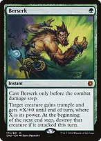
BerserkOne green mana doubles a creature's current power and grants trample for the turn. Cast it before the first combat-damage step, ideally after Xenagos's first boost, to support both attacks. The creature is destroyed at the next end step if it attacked that turn; indestructible from Tyvar's Stand, Heroic Intervention, or an applicable Bello effect can prevent that destruction. Reaver Titan's protection prevents targeting it with Berserk.

VandalblastRemoves a key artifact for one mana or clears opposing artifacts with overload. Your Vehicles survive the overloaded mode. It cannot destroy indestructible artifacts unless you first remove that protection, for example through Shadowspear's activated ability.
Recover and keep the sequencing short
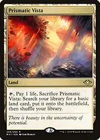
Prismatic VistaFinds an untapped basic Forest or Mountain, fixing early green ramp, the commander, and the extra-combat payment without spending restrictions. A Forest also supports Utopia Sprawl. The list keeps four Forests and two Mountains as targets; Vista cannot fetch a nonbasic dual.
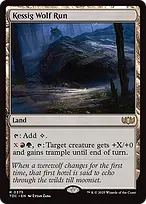
Kessig Wolf RunConverts spare mana into power and trample on a creature, including a crewed Vehicle. A land has mana value zero, so Reaver Titan's protection also prevents this ability from targeting it. Boseiju, Who Endures adds interaction from the mana base, and Buried Ruin can recover an artifact for a later turn.
What to keep and how to sequence
Keep three functional lands, a cheap accelerator, and an affordable Vehicle or card-selection spell. Two-land hands need dependable early acceleration and a way to find more lands. The deck has 36 lands plus three land-option cards: Bala Ged Recovery, Pinnacle Monk, and Shatterskull Smashing. Prioritize an untapped green source for the one-mana mana creatures, and enough red and green to pay the commander and its combat trigger.
An example keep is Forest, Stomping Ground, Command Tower, Llanowar Elves, Rocketeer Boostbuggy, Smuggler's Copter, and Defend the Rider. Turn one deploy Elves. Turn two can develop a Vehicle or cast the commander; choose according to whether you can protect the setup and attack usefully next turn. Spend the following turns establishing the remaining pieces while reserving protection or the combat payment, rather than emptying your hand indiscriminately.
For a quick default turn: identify the Vehicle Balthier and Fran will crew, reserve {1}{R}{G}, crew other attackers, then attack. Resolve resource triggers that can pay for the commander first. Handle the second combat before moving to your second main phase. You do not need the multi-Vehicle Sting line every turn; use it when the additional combat is likely to close the game.
At the beginning of combat, remember three checks: which Vehicles are creatures, which have been under your control since the turn began or have haste, and which were crewed by the commander. Vigilance does not fix a Vehicle you already tapped for mana. Animation does not supply haste, and haste does not satisfy the commander's crew requirement.
The deck can keep attacking without Balthier and Fran through Bello, haste sources, ordinary pilots, and the Vehicles' printed abilities. It loses the commander's easy second combat and vigilance, so stop assuming tapped attackers can swing again. Rebuild the commander when the second attack is worth the mana, or finish through an already established boost and evasive threats.